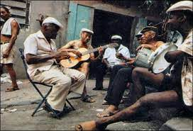

ROCK:
Rock é um termo abrangente que define um gênero musical de música popular que se
desenvolveu durante e após a década de 1950.
|
.jpeg) |
SAMBA:
Samba, também conhecido como samba urbano carioca ou simplesmente samba carioca,
é um gênero musical brasileiro que se originou entre as comunidades afro-brasileiras urbanas do Rio
de Janeiro no início do século XX.
|
 |
SERTANEJO:
Música sertaneja é um gênero musical do Brasil produzido a partir da década de
1910 por compositores urbanos e rurais. As músicas podem ser chamadas genericamente de modas e
emboladas e o som da viola é predominante
|
|